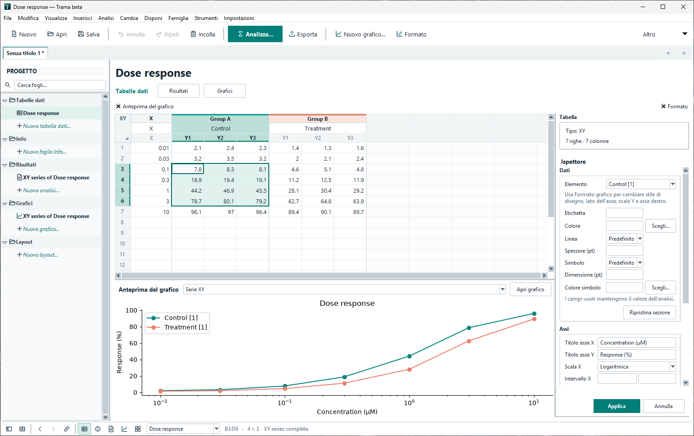

Trama riunisce fogli dati, analisi statistiche e grafici scientifici in un'applicazione per Windows. Incolli da Excel, scegli il metodo, curi la figura ed esporti in SVG o PDF. È gratuita, open source e non richiede installazione.
Beta 0.88.0 Licenza MIT · Windows 10/11 a 64 bit · interfaccia in italiano e inglese · 2.668 test superati su Linux e 2.667 su Windows (un controllo non disponibile, collaudo 0.88). Può contenere errori: vedi i limiti.
Dose response — Trama beta

ABC
AFoglio datiRepliche in sottocolonne, intervalli, celle escluse, incolla da Excel.
BGrafico collegatoCambi un valore e l'analisi si ricalcola; il grafico la segue.
CIspettoreColori, assi e legenda con anteprima, prima di applicare.
Schermata reale del portabile Windows 0.73 beta, dati sintetici.
0 €licenza MIT, anche per uso professionale
2.668test Linux · 2.667 su Windows
118equazioni a catalogo, in 14 famiglie
0moduli di rete nel sorgente
Dove Trama lavora in modo diverso
Non promettiamo «più metodi di tutti»: la copertura è ancora parziale e lo diciamo più sotto. Qui trovi i punti in cui Trama funziona in modo diverso dal software commerciale tradizionale, e dove controllarli.
Gratuito, senza licenze da gestire
Nessun costo, abbonamento o numero di postazioni. Licenza MIT: puoi usarlo, studiarlo e modificarlo, anche nel lavoro professionale.
Un test esatto dice quando passa a un'approssimazione e perché. Un intervallo non calcolabile viene spiegato, non riempito. Il fit robusto è descrittivo, senza errori standard o p inventati. L'analisi da riepiloghi non ricostruisce osservazioni artificiali.
Esporti in SVG, PDF (anche multipagina), PNG o TIFF. Nei layout nativi, fino a 12 pannelli, le parti vettoriali compatibili restano vettoriali; i raster restano immagini.
La 0.88 supera 2.668 test su Linux e 2.667 su Windows, più i collaudi grafici completi. Su Windows un controllo di creazione dei link simbolici è saltato per i permessi dell’account. Il rapporto dice anche che cosa non è stato provato.
Il confronto riguarda il modo di lavorare, non l'elenco dei metodi. La colonna di destra descrive ciò che accade spesso: non è riferita a un prodotto in particolare.
Aspetto
Trama
Software commerciale tradizionale, di solito
Costo
Gratuito. Licenza MIT, anche per uso professionale.
Licenza o abbonamento, per utente o per postazione.
Avvio
Cartella portabile: estrai e avvia. Nessun account, nessuna chiave di attivazione.
Programma di installazione; in alcuni casi attivazione o accesso con account.
Codice e calcoli
Sorgente pubblico, costruito su librerie aperte (NumPy, SciPy, statsmodels). Puoi leggere come viene calcolato un risultato.
Codice chiuso: i risultati si verificano confrontandoli con altri strumenti, non leggendo l'implementazione.
File di progetto
Nel caso semplice, testo JSON apribile con qualsiasi editor.
Spesso un formato proprietario, leggibile solo dal programma che l'ha creato.
Dati
File locali. Il sorgente non include codice di rete.
Varia da prodotto a prodotto: sincronizzazione e raccolta di dati vanno verificate caso per caso.
Continuità
Con la licenza MIT il codice resta utilizzabile e modificabile anche se il progetto si fermasse.
Dipende dal fornitore: una licenza scaduta o la fine del supporto possono limitare l'accesso ai propri progetti.
Le condizioni cambiano da fornitore a fornitore e nel tempo: controlla quelle del programma che usi oggi. Trama non dichiara equivalenza con altri programmi né superiorità generale; le misure di tempo del repository descrivono solo carichi sintetici e non sono confronti.
CI risultati diventano nuovi ingressi.Trasforma, normalizza e adatta una curva. Le modifiche alla sorgente aggiornano la catena. Schermata Windows 0.79 beta, Tema Moderno opzionale.
Test t (anche lognormali e di equivalenza TOST), test di rango esatti, ANOVA ordinaria, di Welch e Brown–Forsythe, misure ripetute, modelli misti REML con Kenward–Roger, confronti multipli e lettere compatte sul grafico. Controllo FDR BH, BY e BKY per colonne e famiglie.
Adattare e confrontare curve
118 equazioni a catalogo in 14 famiglie, profili asimmetrici dei parametri, equazioni personalizzate anche condizionali con soglie fisse, fit globali con parametri condivisi, pesi, confronto AICc, calibrazione diretta e inversa, spline, LOWESS e fit robusti.
Esplorare dati complessi
PCA con biplot, K-means con consenso a 17 indici, clustering gerarchico con dendrogrammi, mappa delle fusioni e grafico del gomito WCSS, matrici di correlazione, heat map ed ellissi di confidenza.
Studiare esiti e associazioni
Kaplan–Meier e Cox, curve ROC con confronto DeLong, Bland–Altman, regressioni multiple, logistiche e di Poisson, tabelle di contingenza e misure diagnostiche.
Preparare le osservazioni
Formule nel foglio, trasformazioni, baseline anche con repliche, normalizzazione, area sotto la curva e picchi, studi Monte Carlo con seed riproducibile.
Comporre la figura
Grafici XY e a colonne, box e violini, forest e bubble plot, barre d'errore asimmetriche, annotazioni e forme native, tacche personalizzate e fasce sugli assi, layout fino a 12 pannelli.
Elenco completo, opzioni e limiti nelle funzionalità.
Quello che Trama non è (ancora)
Meglio saperlo prima di scegliere.
È una beta. Le versioni 0.x possono contenere errori e funzionalità incomplete; non esiste ancora una versione definitiva.
Copertura parziale. Non dichiariamo equivalenza con altri programmi: un software consolidato può offrire opzioni, formati, assistenza ufficiale e anni di rodaggio che Trama non ha.
Solo Windows 10/11 a 64 bit per il pacchetto portabile.
Importazione di progetti di altri programmi limitata ai contenuti verificati; non è un export universale. Vedi la compatibilità.
Interfaccia italiana quasi completa: alcune tabelle dei risultati, legende e messaggi restano in inglese.
Nessuna validazione clinica o certificazione regolatoria. I test provano i casi eseguiti, non ogni uso possibile. La scalatura Windows 125% e 150% non è stata collaudata nella 0.88.
Provalo in tre passi
Circa cinque minuti, senza installare nulla. Serve Windows 10 o 11 a 64 bit e uno schermo di almeno 1024 × 768 pixel.
Scarica
Prendi Trama-<versione>-Windows-x64.zip dalla pagina delle release, non il codice sorgente.
Estrai e avvia
Estrai tutta la cartella, tieni accanto all'eseguibile la cartella _internal e avvia Trama.exe.
Apri l'esempio
Scarica Laboratorio.alab e aprilo: dati sintetici, un fit globale e un layout già pronti.